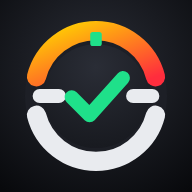

Política de Privacidade
Habit RC · atualizada em 10 de novembro de 20261. Quem somos
O Habit RC é um aplicativo gratuito de organização de hábitos, tarefas, finanças pessoais e rotina, criado por Samuel Douglas e disponível em sdouglaslisciocardoso.github.io/Habit-Racing.
2. Que dados o app guarda
Tudo o que você digita no app: hábitos, tarefas, anotações, contas, gastos, lista de compras, datas importantes, sono e demais registros. Esses dados ficam guardados no próprio aparelho. Quando você cria a senha do cofre (opcional), eles são criptografados (AES-256) com uma chave gerada a partir da sua senha, que nunca é salva nem enviada a ninguém.
3. Login com o Google
A conexão com o Google é opcional. Ao conectar, o app pede apenas a permissão drive.appdata, que dá acesso somente a uma pasta oculta e exclusiva do Habit RC no seu Google Drive. O app não consegue ver, abrir ou alterar seus outros arquivos, e-mails, contatos ou qualquer outro dado da sua conta Google.
- O app salva nessa pasta uma cópia dos seus dados, para você usar o mesmo Habit RC em vários aparelhos. Com a senha do cofre ativa, essa cópia vai criptografada e nem o Google consegue lê-la.
- O acesso do Google fica apenas na memória do aparelho e expira em cerca de 1 hora. Ele nunca é enviado a servidores do Habit RC.
- O uso de informações recebidas das APIs do Google segue a Política de Dados do Usuário dos Serviços de API do Google, incluindo os requisitos de Uso Limitado.
- Você pode desconectar quando quiser em Ajustes, com a opção de apagar a cópia do Drive, ou remover o acesso em myaccount.google.com/permissions.
4. Avisos com o app fechado
Se você ativar essa função, o app envia ao nosso servidor de avisos (hospedado na Cloudflare) a agenda dos próximos 7 dias: horário, título e texto curto de cada aviso (por exemplo, "Hora de Treino"), para que a notificação chegue na hora certa. O servidor não recebe o resto dos seus dados, identifica seu aparelho apenas por um código aleatório e apaga a agenda quando você desliga os avisos ou fica 30 dias sem abrir o app. A entrega até o celular é criptografada pelo serviço de notificações da Apple, do Google ou do navegador.
5. Engenheiro IA
A função de IA é opcional e usa uma chave da API da Anthropic que você coloca no app. Quando você conversa com o engenheiro, o app envia sua pergunta e os dados necessários para responder diretamente à Anthropic, sob a política de privacidade dela. Sem chave, o engenheiro funciona no modo offline, sem enviar nada.
6. O que não fazemos
- Não vendemos, alugamos ou compartilhamos seus dados.
- Não usamos anúncios, rastreadores ou cookies de terceiros.
- Não usamos seus dados para treinar inteligência artificial.
- Não temos acesso à sua senha do cofre e não conseguimos recuperá-la.
7. Seus direitos (LGPD)
Você tem controle total: pode ver, corrigir, exportar e apagar seus dados a qualquer momento dentro do app. Para apagar tudo, remova o app do aparelho, desconecte o Google (apagando a cópia do Drive) e desligue os avisos. Dúvidas sobre privacidade: sdouglaslisciocardoso@gmail.com.
8. Mudanças
Se esta política mudar, a nova versão será publicada nesta página com a data de atualização.